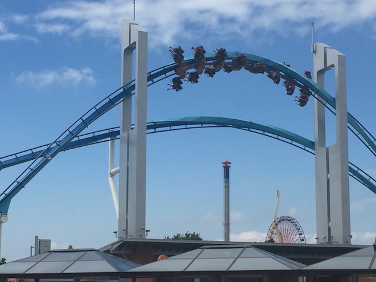
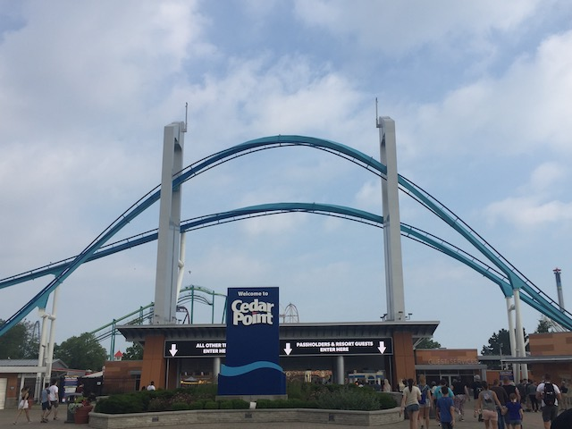
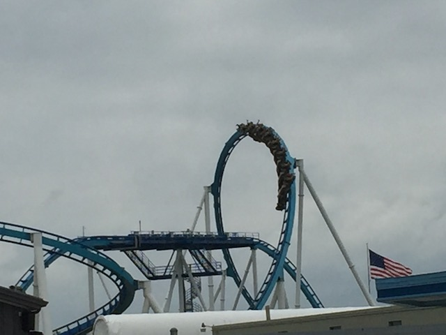
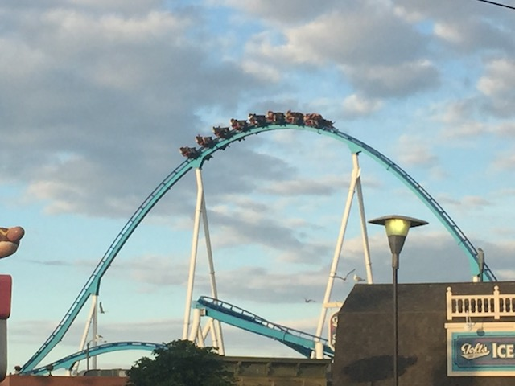
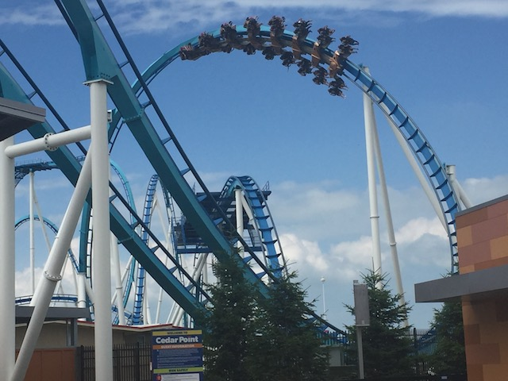
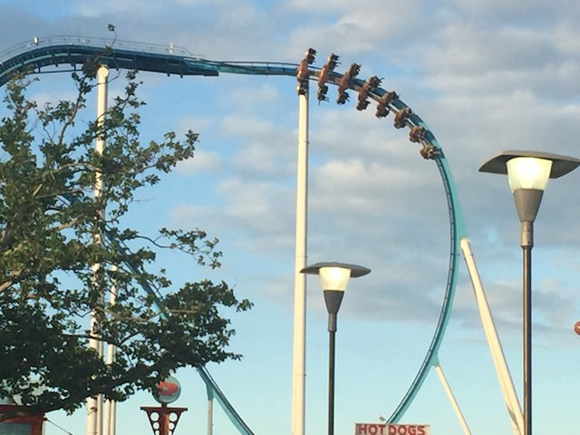
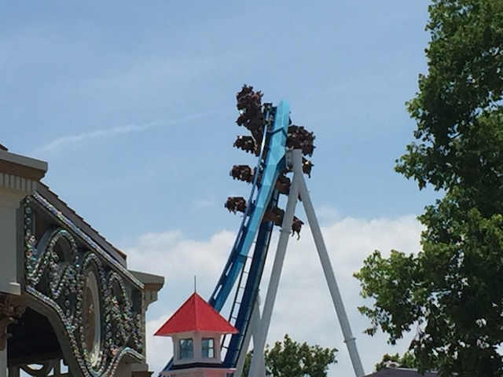
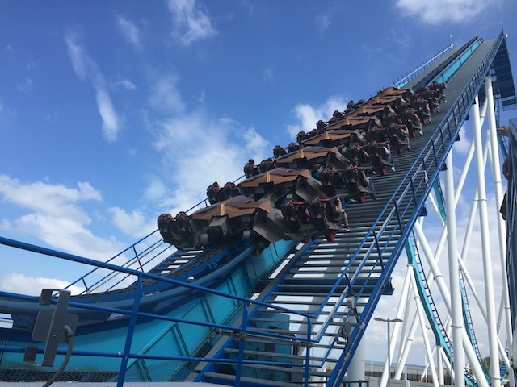
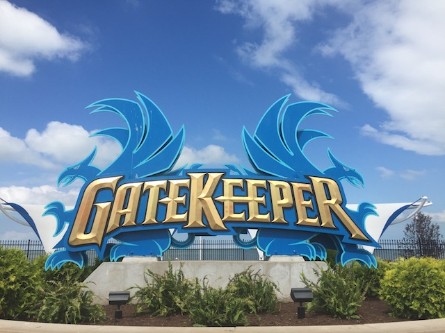

| |
Gatekeeper Review

We're here at Cedar Point. Today's ride we'll be reviewing for you is Gatekeeper. This is another one of those B&M Wingriders that every complains are forceless and not very intense. And yeah. Gatekeeper isn't super intense. But you know what? It's just a very fun ride. We get in the cars, pull down the rubber vests, and we're off. We roll around a turn, and start climbing up the lifthill. On one side, you get a great view of Raptor, Blue Streak, and the front of Cedar Point. And on the other side, it's Lake Erie. So yeah. The setting is great. We eventually reach the top, and are rolling towards the Dive Drop. You slowly move and flip upsidedown, only to then flip right down towards the ground. I really enjoy these Dive Drops. You get some nice hangtime before getting some good speed. And to be fair, Gatekeeper is a little bigger than the other Wing Riders that I've ridden. But that tiny bit of extra speed doesn't really affect the ride that much. We then head into the Immelmann. I hope you like inversions, because Gatekeeper is chock full of them. Very floaty inversions. And yeah. We soar up into that immelmann, get some decent hangtime, and just glide right out of that. We then soar up and over a large hill that does give us some mild floater air. Gee. This is really reminding me of another one of the famous coasters at Cedar Point. ;) Nah, just playing with you. Millenium Force is much better. We then head into a giant corkscrew. It's very wide, there's no whip, and it's very similar to that on Tatsu. Good for floatiness, bad for intensity. And you all know how much I love intensity. We then go right into the most iconic part of the ride. The Zero G Roll that goes right over the park entrance. And of course, it has the keyholes. These things are standard on nearly all the Wing Riders, but they're still a ton of fun and a cool near miss experience. Hey! If this is the Gatekeeper, and we're going through the keyhole, then WE MUST BE THE KEYMASTER!!! ZUUL MOTHERF*CKER!!! ZUUL!!!! We then head into a Dive Loop. But apparently, this isn't just a Dive Loop. It's an incline Dive Loop. And...I can sort of see it in photos. But on the ride, it feels like an inversion. I know Hydra also has one, and I argued that that one doesn't count as an inversion as that's more of an overbanked turn than a Dive Loop. That is NOT the case with Gatekeeper. It TOTALLY counts as an inversion. It feels like a normal dive loop. In a way, that's a little dissapointing as I really like the Incline Inversions. But it totally counts. We then head into an Inline Twist, and we're having another near-miss with the keyholes. That's pretty cool. We then rise up and go into a midcourse brake. But don't think that the ride is halfway over. There's not much more left on Gatekeeper. We then head down a small drop only to pop up, dip down, and head into a downward helix to the ground. So we're just cruising at this point. Head over a small little hill, go through a slight curve, and glide right into the brake run. So yeah. Gatekeeper pretty much is your standard B&M Wing Rider. I know it's mostly just inversions and there's not much else to the ride. And yeah, that's true. But it's still a lot of fun. And best of all, it doesn't try and choke you like on other Wing Riders. That alone is a major improvement. Definetly give it a ride when visiting Cedar Point. It's not the best ride ever, but it is a fun ride.
7/10
Location: Cedar Point
Opened: 2013
Built by: B&M
Last Ridden: June 25, 2018
Gatekeeper Photos








Home
|